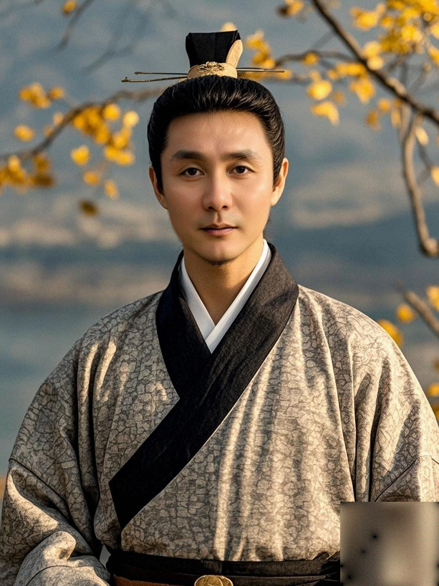

⭐
狮山故事堂 · 和这座山有关的人
HALL OF STORIES
老骥伏枥，志在千里；重九登高，步步生风。邀您登一座 114.5 米的小山：石头会留言，山顶望五塔，一眼看一千年——边走边聊，把重阳的高，登进心里去！
农历九月九日，两九相重，故名「重阳」。曹丕说：「九为阳数，而日月并应，俗嘉其名，以为宜于长久。」——久久长寿，所以重阳要登高、吃糕、敬老。登高的本义，是秋天最后一次站到高处，看一眼这一年。
这条线专为长者而设，取名「千里」，取曹操《龟虽寿》之意：「老骥伏枥，志在千里；烈士暮年，壮心不已。」脚步可以放慢，眼光仍要放远——重阳登高，正是一年里最相宜的一场。
山只有 114.5 米，全台阶步道，登顶约 15～30 分钟；但站上山顶，一座山望得见五座塔——从隋朝大业四年（608）到 1995 年，一眼看一千四百年。本页里每张小任务，都叫「千里任务卡」：不为考记忆，只为给您一个由头——边走、边看、边聊。
主题：重阳登高 · 一座孤山凭什么看得最远。北线上山、南线下山，全程约 2～2.5 小时，地铁 1 号线狮子山站直达。

脚下的湖叫天狮湖，狮子山的倒影就卧在水里。明代的《姑苏志》专门记了一笔：城西这四座小山，"与诸山不相连"——孤零零，是这座山的地理；热闹，是它的今天。
1997 年，苏州乐园欢乐世界就在山脚下开园，一句"迪士尼太远，去苏州乐园"，苏州人都会背。2017 年乐园闭园，2023 年原址建成狮山公园，2024 年狮子山、天狮湖全面开放登山。湖对岸，苏州博物馆西馆、狮山大剧院隔水相望——一代人的旋转木马，换成了博物馆和剧院。这叫四个字：还山于民。


往北看，一公里外那座 63.8 米的小山叫何山——邻居，但不是亲戚。苏州城西有天平山、灵岩山一条大山系，可狮子山不挂在山脉上：明《姑苏志》白纸黑字——"以上四山与诸山不相连。"
正因四面无遮挡，站上山顶，360 度视野——这就是待会儿能望五塔的底气。1229 年刻的《平江图》上，它还叫"岝崿山"（zuò è shān），何山画在正北，与今天方位全同。"狮子山"是后人按山形叫出来的俗名。
为什么这座山几乎不长树？因为它整个是一块 1.5 亿年前从地底拱出来的大花岗岩，裸岩占六成以上。石头上种不了几棵树，但石头上能干另一件事：刻字——清朝的进士、民国的先生、现代的大师，都来留过言。
山腰的洗心泉，题者有两说（一说康有为、一说清道光年间僧人），旁边还有郭沫若题的"物洗则洁，心洗则清"；山南巨石坠星岩，是书画宗师吴昌硕光绪八年（1882）所题，相传那块石头是天外坠星所化；再加上仙人靴、云溪、飞雨坡、中流砥柱、石船等，合称狮山十八景——一座小山攒下七八处摩崖，苏州近郊数得上。
1500 年前，山顶是一座寺：南朝梁天监二年（503）建，初名法音寺，唐代改称思益寺。唐代的苏州刺史、大诗人白居易专门为它写过一首诗——《自思益寺次楞伽寺》：从狮子山的思益寺，一路走到上方山的楞伽寺。公元九世纪，一位"苏州市长"，从这座山走到那座山。
寺早没了，石头还记得：狮子下巴的岩洞，是后来石佛寺的位置，洞里至今供着一块《般若波罗蜜多心经》刻碑。1926 年，辛亥元老李根源专程爬上来访古，把所见一条条记进《吴郡西山访古记》。
这块石桌石凳，叫状元读书台。主人是明朝苏州人申时行——嘉靖四十一年（1562）状元，后来做到万历朝的内阁首辅。传说他小时候就在狮子山的寺庙里发奋读书。
他身上还藏着苏州人讲了几百年的身世之谜——鼎鼎大名的弹词《玉蜻蜓》：孩子自幼送人收养，后来高中状元，持信物玉蜻蜓入庵认母，"庵堂认母"一折是评弹经典。很多人认为故事原型就是申时行。传说归传说，但"狮子山上读过书"这一笔，苏州人愿意信——一座山出一位宰相，读书台就是苏州人给孩子立的精神地标。
登顶先看脚下：整座山像一头伏在地上的大狮子，往东南探出的那一角是狮首，回望的方向正是五公里半外的虎丘。山顶"狮子回头望虎丘"七个字的石刻，苏州人从小听到大。
这句老话有两版讲法：传说一，寒山寺神僧的坐骑青狮下凡，斗死了祸害百姓的白虎，自己误了回灵山的时辰，跌落凡间化作石山，化石一瞬还不甘心回头望一眼；传说二更接历史——公元前 515 年专诸刺吴王僚，阖闾即位；吴王僚葬在狮子山，阖闾葬在虎丘剑池下，一狮一虎、叔侄对望，有人说狮子回头，是冤魂怒视篡位者。两版传说指向同一个地方：虎丘。
小知识：明《姑苏志》记，山顶原有两块巨石"云是狮子两耳"，可惜"自元以来凿石且尽"——你们今天看到的，是一头缺了耳朵的狮子。
天气通透时，苏州五座名塔在山顶一次看全。认塔有个五字诀——斜、方、高、山、旧：


北偏东 34°·5.6km｜虎丘塔：五代后周显德六年（959）始建，塔身倾斜 2.34 米，"东方斜塔"。东北 47°·2.7km｜寒山寺普明宝塔：1995 年落成，四方五层，五塔里唯一的方形唐塔——此前寒山寺六百多年只闻钟声、不见塔影。东偏北 65°·7.5km｜北寺塔：高约 76 米，苏州古塔之最，全城天际线的锚点。西南 231°·5.6km｜灵岩山寺多宝佛塔：现存塔身建于南宋绍兴十七年（1147），塔与山融为一体，吴王夫差为西施建的馆娃宫就在那座山上。南偏东 149°·6.5km｜上方山楞伽塔：隋大业四年（608）始建，与虎丘塔并称"姐妹塔"，塔身微倾，"苏州第二斜塔"。
数一数年纪：楞伽塔 608 年始建，普明宝塔 1995 年落成——最老和最新，差了一千三百八十七年。站在一座 114.5 米的小山上看尽它们，这就是"不与诸山相连"送给苏州的礼物。
脚下站的位置，123 年前站过二十个年轻人。1903 年，苏州二十岁的青年朱梁任约了包天笑、苏曼殊等十八人，雇小船出城登上狮子山，摆开祭品，扯起两面幡：黑幡写"魂兮归来"，白幡画一头雄狮，落款"黄帝之曾孙小子"——最后朝天鸣枪一响。为什么选这座山？因为他们喊的口号就是"睡狮醒兮"：中国是一头睡狮，要醒，就得有人先站到狮子头顶上去喊。朱梁任回城后，把家门口一条弄堂改名"醒狮路"——今天还在石路那边。
更妙的是十四年后：1917 年，朱梁任与叶德辉出钱督工深刻宋碑《平江图》——文庙里那块碑右缘"郡人叶德辉朱锡梁督工深刻"的落款，就是他。这座山和文庙那块碑，是同一个人的两件"作品"：一个在山顶上喊醒中国，一个在碑刻里唤醒一座城。走过文庙线的朋友，此刻该起鸡皮疙瘩了。
下山走南线——官方设计成"只下不上"，一边下一边看湖。1976 年，山麓平整土地时挖出了古墓，考古队两次发掘，清出四座西晋砖室墓，出土随葬品 126 件——青瓷扁壶、兔形水注、金钗金环，如今都在苏州博物馆。一千七百年前，苏州人就觉得这座山是块好地：吴王僚传说葬在这、西晋人把家族墓安在这、状元在这读过书、青年在这喊醒过中国。
回到山脚，做重阳的正经事：重阳糕——"糕"与"高"同音，古人把糕放在儿女额头，祝一声"愿儿百事俱高"。重阳也是敬老节：今天谁是被家人一路牵来的，下山请反过来——替他们背包，扶他们下最后一段台阶。登高的规矩，从来不是自己站到最高，是把最好看的风景，指给你爱的人看。
自备饮水（山上无售卖点）；穿防滑鞋（全台阶步道，雨天湿滑）；重阳及节假日人流较大，留意预约与错峰；北线、中线上下自如，南线只下不上——别把上山的路走反了。节奏不赶，半山休息点随时可以歇脚看湖。
一座山的"生老病死"和"死而复生"——从吴王僚到狮山大剧院。
一座小山，半城人物。这六位（组）人物，都能在狮子山找到他们的"踪迹"——登山时对照找一找！
公元前 515 年，专诸把匕首藏进鱼腹，在宴席上刺杀了吴王僚，公子光即位，就是阖闾。唐代《吴地记》记载："岝崿山在吴县西十二里，吴王僚葬此山中。"——这是"狮虎对望"（僚葬狮山、阖闾葬虎丘）的史源。墓的具体位置至今未经考古确认，但唐代人言之凿凿，1926 年李根源访古时也记下"吴王僚墓旧在寺中"。
任苏州刺史期间，白居易写下《自思益寺次楞伽寺》——从狮子山的思益寺，走到上方山的楞伽寺（今治平寺一带）。后来他主持开凿的山塘河，成了另一条研学线。一位大诗人，把苏州的山山水水都写进了诗里。
狮子山北面的何山，原名鹤阜山，因南朝齐梁间的隐士兄弟何求、何点归隐安葬于此而改姓"何"。何点被时人尊称"通隐"——看得通透的隐士，是当时士大夫的精神偶像。山清水秀不图名利，把名字留给了山。
苏州人申时行，状元出身，官至内阁首辅。传说他幼年在狮子山寺庙里读书，山上"状元读书台"因此得名；弹词《玉蜻蜓》"庵堂认母"的故事，民间也常算在他头上。传说归传说，正史记他早年在卫道观读书——但苏州人愿意把这一笔文脉，安在这座山上。
二十岁登上狮子山扯幡鸣枪"招国魂"，回城把弄堂改名"醒狮路"；十四年后又督工深刻《平江图》碑。他还是南社发起人之一、宋大儒朱长文的三十三世孙。1932 年，他为保护甪直保圣寺唐塑奔走，归途覆舟遇难，父子同殉——为保护文物而捐躯。
隔壁何山山顶有一座张王庙，祭祀的是元末在苏州称吴王的张士诚——民间感念他在苏州的善政，给他立庙香火不绝。北寺塔线讲过他的纪功碑，山塘线讲过他的故事，狮子的隔壁山上还有他的庙：苏州人对这位"张家王爷"的感情，走到哪儿都能撞见。
可个人报名，也欢迎老友结伴同行；如需家人陪同参加，请提前报备确认。
每团上限 30 人，报满即截止。
本线路为长者研学设计，适合 55 岁以上、行动自如的活力长者参加。登顶为台阶步道约 15～30 分钟，节奏放慢、量力而行；不便登顶的老友可在半山休息点看湖等候，同样精彩。
全程设有 多个有奖竞猜答题关卡，更有彩蛋大奖等着你来夺取！

封子老师
姑苏区老年大学特聘文史讲师 · 苏州本土文旅内容创作者
教师风采，请点这里 →